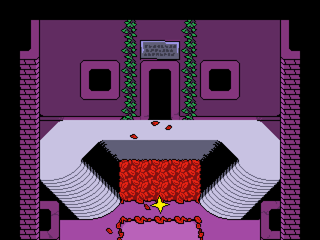
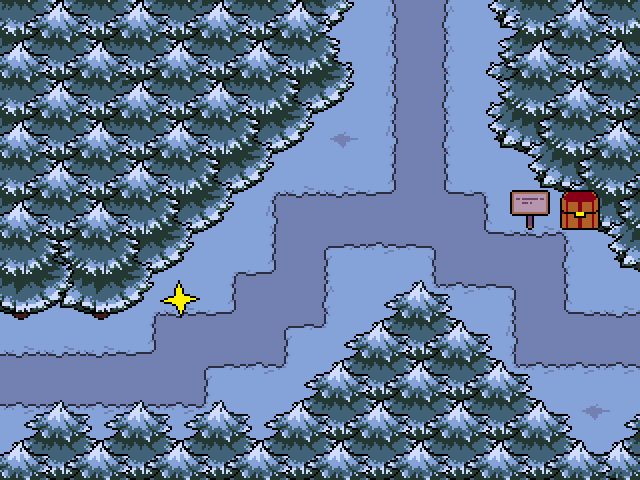
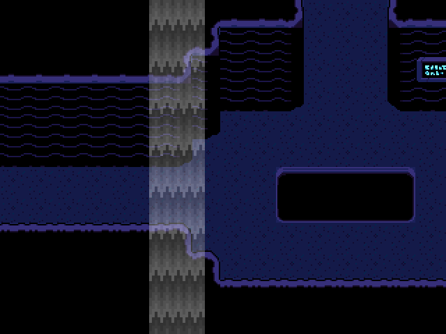
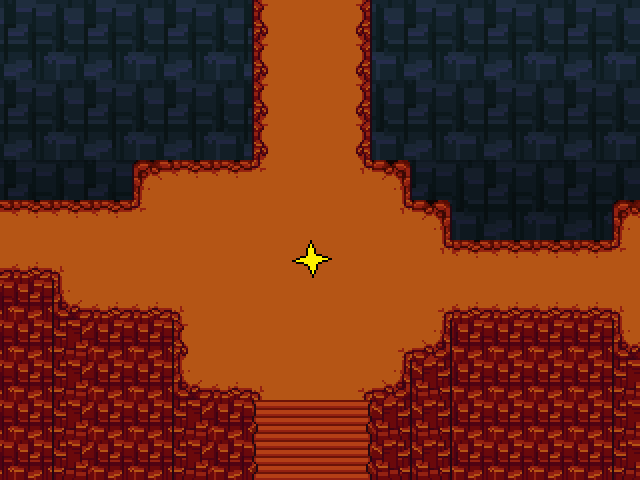
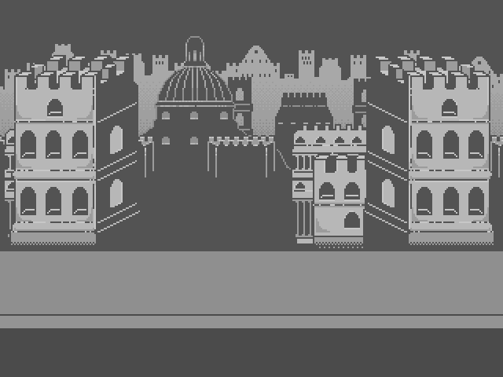
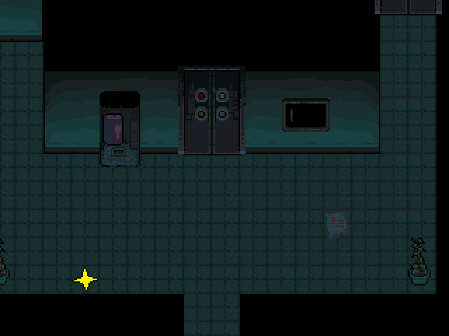
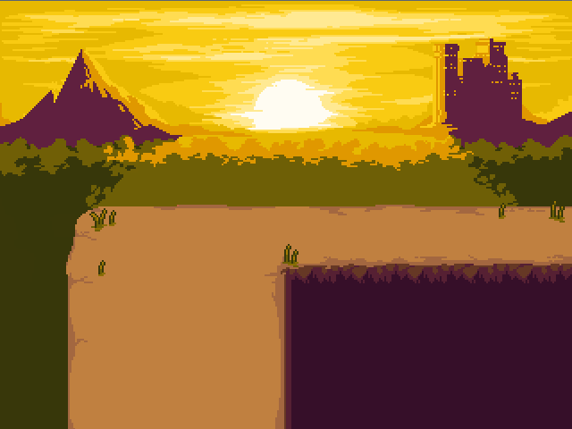
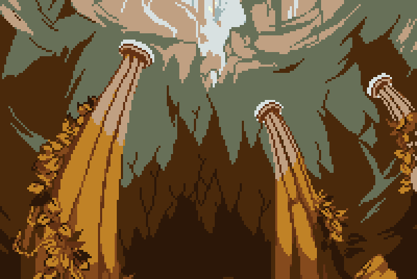
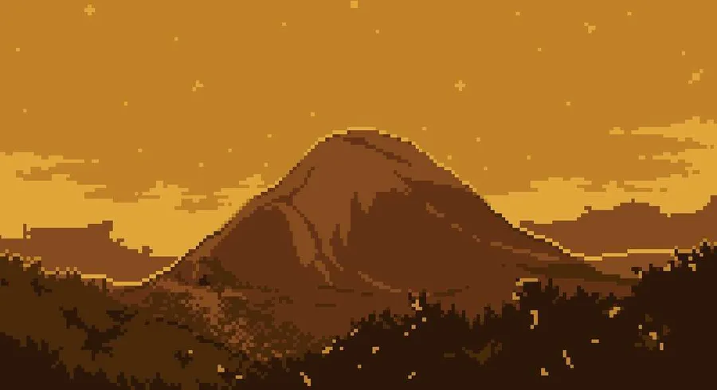

The Undertale
Wiki
The Undertale
Wiki ( Knowing all the places you can go fills you with determination. )
( Knowing all the places you can go fills you with determination. )
Locations
( The locations that you pass through along the game. )
-

Ruins -

Snowdin -

Waterfall -

Hotland -

New Home -

True Lab
Miscellaneous locations
( Locations that you heard about while playing. )
-

Surface -

Underground -

Mount Ebott